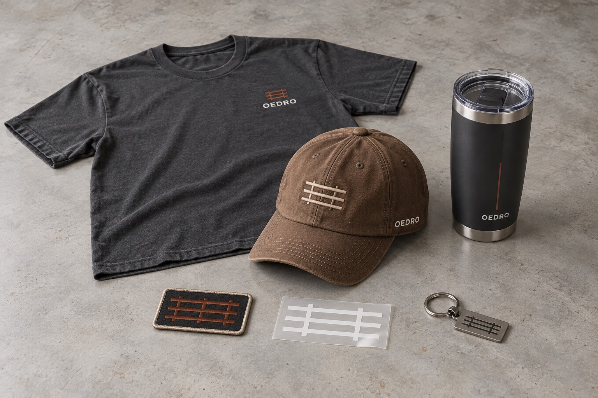
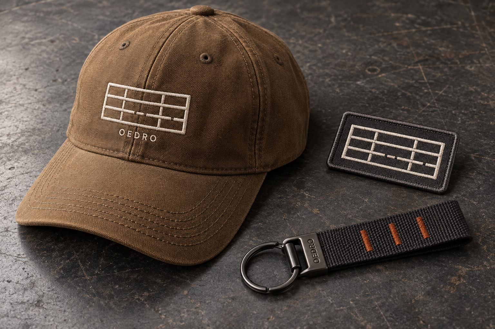
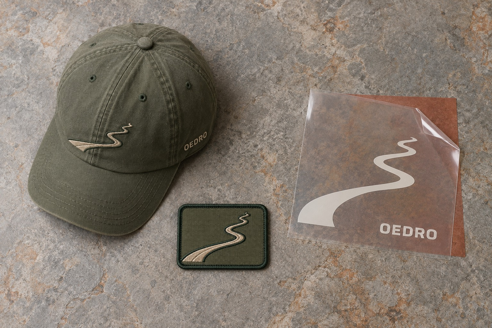
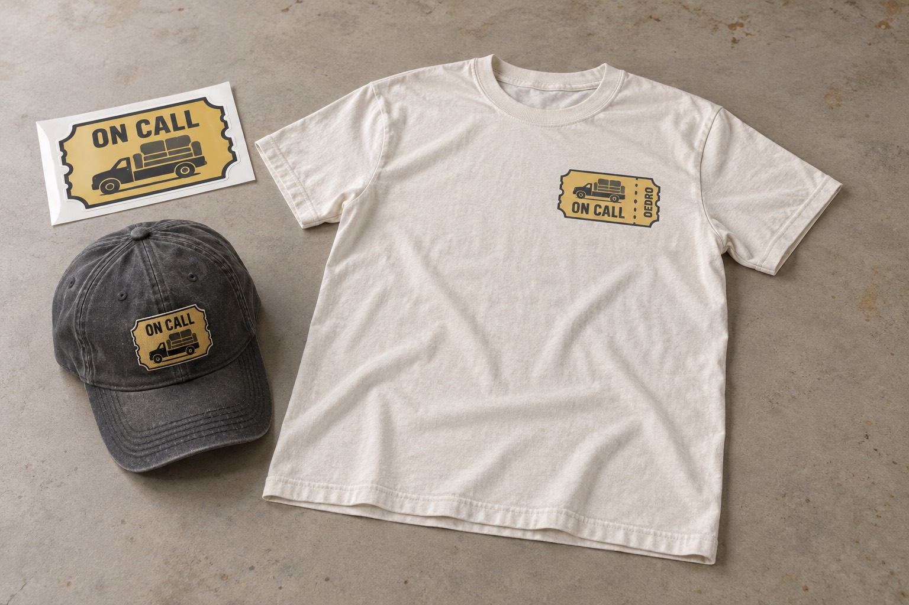

OEDRO Merch 企划
周边是品牌升级里的用户参与试验，能否成为商品线，要看真实需求、成本结构和用户是否愿意主动展示。
汽车配件购买频率低，两次购买之间，车贴、帽子、投稿和活动可以形成轻量联系。以下是尚未启动的建议，设计均为概念效果图，没有现货。
这次一起定下来的事
- 试验目标：验证用户是否愿意选择、使用和展示周边，销售额不是唯一早期标准。
- 首批候选：评估贴纸、织章和钥匙扣，帽子做打样比较。
- 设计方向：工具工装、户外路线、车主幽默，分别判断场景与偏好。
- 共创承诺：高票进入打样评估，需求、预算和权益通过核对后再决定生产。
- 投入范围：小批量验证；没有核实成本、授权和活动规则前，不承诺正式上线。
产品优先级
Rough Country 已有汽配品牌生活方式周边，证明这个模式存在，但不证明 OEDRO 做同样的事会赚钱。优先级按使用场景和验证难度排，目前没有已核实成本数字。
- 优先评估
- 车窗、工具箱、保温箱用贴纸，织章与钥匙扣。使用场景明确，需核对材质、耐候性和制作条件。
- 打样比较
- 帽子：比较版型和刺绣效果，再判断是否适合小批量。
- 后续候选
- T 恤和保温杯：用户对尺码、面料和保温性能的要求更分散。卫衣与夹克更后，需额外核对库存压力。
- 保留备选
- 冰箱贴的车主场景较弱，除非后续有明确用途，否则不优先。

三个设计方向
工具工装
把结构线、织带和压印做进设计，让周边看起来像车间里会用到的东西。重点比较材料细节与工具箱、工作服的搭配。

户外路线
用弯曲的山路做图案，适合工具箱或车窗，强调“车是去户外的工具”。图案应能在小面积上辨认。

车主幽默
围绕“总被叫去搬东西”的情境做设计，写车主一看就懂的场景。判断用户是否愿意使用这个表达，避免廉价笑话。

共创怎样走到实物
活动名建议为 Your Next OEDRO，中文可作“你的下一件 OEDRO”，用于征集和投票页面。正式使用前需查商标，当前不保证名称可用。
- 确定主题
- 可生产候选
- 展示投票
- 核需求、预算与权益
- 打样确认
- 小批量寄送
- 真实使用分享
高票代表进入打样评估，生产仍需核实需求、预算、最低起订量与设计权益，不能自动承诺。
IG 可用视觉投票，FB 和邮件可同步征集选择。X 需要独立发图加关联文字投票；匿名票无法对应具体用户，不能作为领奖名单。
下一阶段开放 DIY 投稿
投稿前写清许可、署名和奖励条款，不能默认投稿即可商用。筛稿时看原创性和可生产性，入围后公示、投票、验证成本、打样，获奖者确认授权后才生产。用户投票是选择线索，不能替代生产判断。
- 规则与投稿
- 原创和生产筛选
- 入围公示、投票
- 成本与样品验证
- 确认授权
- 生产
Threadless 官方机制可作参考：用户评分和评论供品牌最终选稿，高票不保证生产。
三个可借鉴的做法
- Rough Country
- Customer Builds 支持投稿、按车型筛选和 Shop the Build，让车主展示连接到具体改装。
- LASFIT
- 图库按车型连接产品，便于用户从相似车型找到相关信息。
- WeatherTech
- 已有帽子、水瓶和赛车模型，展示了配件品牌延伸周边的可能。
这些案例证明模式存在，不能证明 OEDRO 的需求、成本或销售结果。
周边可以用在哪里
订单惊喜、真实 UGC 感谢、访谈或测试感谢、社群活动、未来推荐，以及未来少量销售。每种用途都要看用户是否真正愿意领取和使用。
不能用五星评价换奖励；奖励内容需要按适用规则披露。邮件邀请可衔接现有邮件模板，活动参与和内容商用许可分别确认。
询价要算到送达用户手里
官方配送页写明美国仓配送，说明物流网络存在，但不证明周边能合单或成本便宜。合单与单独寄送分别计算，不能臆测中国制造就低成本。拿到报价前，不写成本结论。
- 工厂端
- 单价、最低起订量、打样、包装、国内运输。
- 跨境运输
- 头程、税费、入仓。
- 美国履约
- 拣配、尾程、退货与库存；合单增重和单独寄送分别询价。
验证与止损
有效选择、主动问购买、自愿晒实物、重复参与、实际领取，以及未来销售时的售出情况，是早期验证指标。投票热度需与后续行为一起看。
不先开几十个款式，不量产不受欢迎的款，也不把销售额当唯一早期标准。若高票没有转化为实际领取意愿、样品不合格，或送达成本超出可承受范围，就调整或停掉该款。
真实活动上线前的条件
平台资格、地区与年龄限制、奖品和选择规则、设计版权、照片许可、隐私与奖励披露，都需确认。成本、样品或权益任一项未通过，不能进入生产和寄送。
当前 Hub 仅作企划，没有真实抽奖、下单或投稿表单。